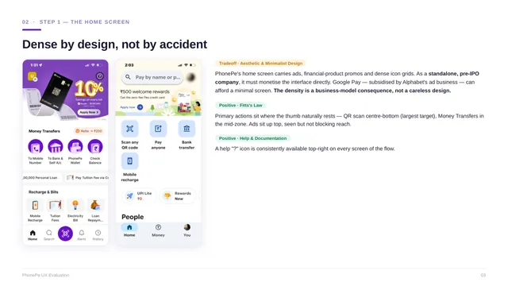
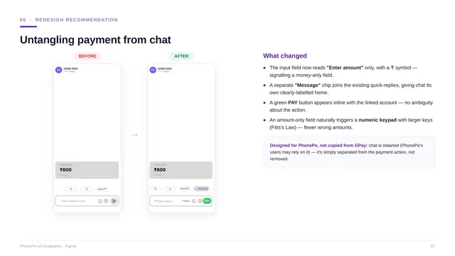

Fintech · UX evaluation
PhonePe Send Money: UX audit and redesign
A product manager's usability evaluation of the most-used journey in India's largest UPI app, with fixes that respect PhonePe's business model.

Summary
- Question
- Where does Send Money add friction, and which of that friction is deliberate?
- Key finding
- A fake account with a gibberish name was saved and reached the UPI PIN step with no recipient confirmation. The same app rejects an invalid UPI ID instantly.
- What I proposed
- IFSC search with a verified-recipient check, amount entry separated from chat, and more contrast for Money Transfers.
- Scope
- 15+ screens audited; 8 candidate issues narrowed to 3.
Why this flow
PhonePe handles roughly 46–48% of UPI transaction volume and reaches deep into Tier-2, Tier-3 and rural India. Send Money is its core peer-to-peer journey and the most-used action in the app, so friction there has the highest user impact. I used Google Pay as a contrast to sharpen each finding, not as a full competitor audit.
- Open the app
- Choose a path: mobile number or bank
- Select the recipient
- Enter the amount
- Pay
- Enter UPI PIN
Home screen: dense by design, not by accident

The home screen carries ads, financial-product promos and dense icon grids. That isn't careless design: PhonePe has to monetise its interface directly, while Google Pay is subsidised by Alphabet's ad business and can afford a minimal screen. I logged it as a trade-off against aesthetic and minimalist design, not as a flaw.
Two things work well. Primary actions sit where the thumb rests, with QR scan at the centre-bottom as the largest target (Fitts's law). And a help icon is available at the top right of every screen in the flow.
Is this a payment, or a chat?
When you pay a saved contact, the screen turns into a chat thread. The field reads “Enter amount or chat”, reply bubbles appear, and a messaging-style send arrow sits where a Pay button should be. The primary task shares one input with a secondary one, which breaks consistency and standards and the match with the real world.
Google Pay keeps Pay, Request and Message as separate, labelled actions, and PhonePe's own bank-transfer path already uses a clean amount-only input. On the positive side, a verified banking name with a green shield appears before payment once an amount is entered, which is a strong trust signal.
A fake account, saved without a single check
I entered a random account number and a gibberish name on the bank-transfer path. PhonePe marked IFSC as “Not required”, saved the account as a beneficiary, and let the flow continue to the payment screen without confirming who was being paid.
The same app validates a UPI ID instantly: “This UPI number doesn't exist.” PhonePe knows how to validate; it just doesn't on the bank-account path, so users trust a check that isn't happening. Skipping IFSC follows recognition over recall, but it trades away error prevention. Google Pay resolves the same tension with a searchable IFSC dropdown and upfront validation.
Issues and the heuristics they break
| Issue | Heuristic | Fix |
|---|---|---|
| The bank-transfer flow saves unverified or fake accounts with no recipient confirmation before the UPI PIN screen | Error prevention; visibility of system status | A searchable IFSC dropdown for users who want it, and the verified recipient name with a green tick before proceeding |
| The Send Money screen merges payment and chat in one field, forcing a QWERTY keyboard with small number keys | Consistency and standards; match between system and the real world | Separate amount entry from chat, add a distinct Message button beside the suggestion chips, and trigger a numeric keypad for the amount |
| Ads and promos on the home screen compete with the primary payment actions | Aesthetic and minimalist design | More contrast on the Money Transfers block, and section order personalised to the user's most frequent action |
Mapping to UX laws
- Hick's law. The dense home screen (ads, transfers, recharges, bills) increases the time it takes to decide on the payment action.
- Fitts's law. QR and primary buttons sit in the thumb zone. Larger numeric keys would also reduce wrong-amount errors.
- Jakob's law. The chat metaphor borrows a familiar pattern. The same law plays out differently for PhonePe's mass-market base and Google Pay's more fluent users.
Redesign: untangling payment from chat

- The input reads “Enter amount” only, with a ₹ symbol, so it signals a money-only field.
- A separate Message chip joins the existing quick replies, giving chat its own labelled home.
- A green Pay button sits inline with the linked account, so the action is unambiguous.
- An amount-only field triggers a numeric keypad with larger keys, which means fewer wrong amounts.
Chat stays, because PhonePe's users may rely on it. It's separated from the payment action rather than removed: designed for PhonePe, not copied from Google Pay.
What the evaluation showed
- Tell flaws from trade-offs. Several candidate issues were dropped after testing because they were deliberate trade-offs, not failures.
- Design traces back to strategy. PhonePe's density, wording and icons follow from its business model and mass-market segment.
- Solve within constraints. The strongest redesign fixes the problem while respecting PhonePe's users, revenue model and reality.
Limits of this work
- This is a heuristic evaluation by one evaluator, not a usability test with users.
- The fake-account finding comes from edge-case testing on one account and one device (iOS, June 2026). The app may have changed since.
- The redesign covers the Send Money screen only.